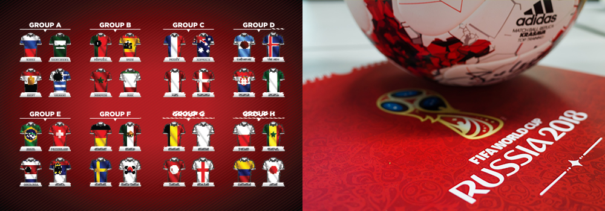
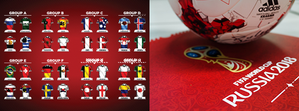
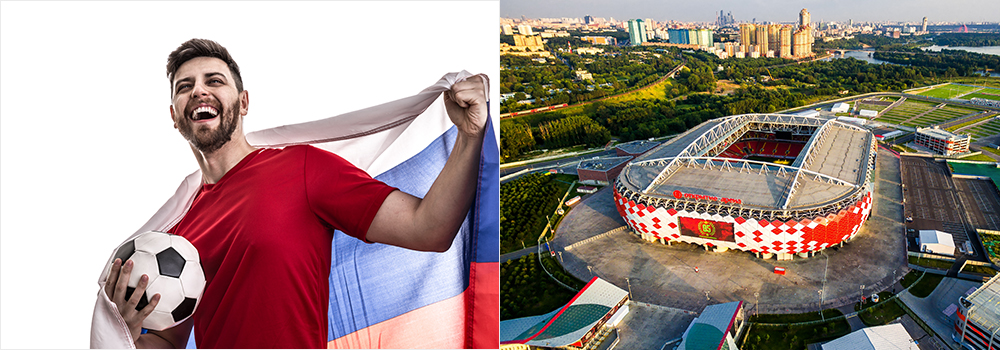
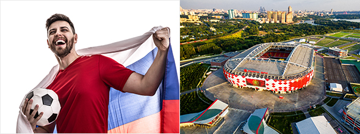

와 제 롤모델이 잡스에요!!! 아이폰 첫 출시되고 나서부터 계속 아이폰 쓰고 있는데 잡스가 너무 그리워요ㅠㅠ 지금은 돈만 벌려고 하는 것 같아서 디자인 발전도 없고ㅠㅠ와 제 롤모델이 잡스에요!!! 아이폰 첫 출시되고 나서부터 계속 아이폰 쓰고 있는데 잡스가 너무 그리워요ㅠㅠ 지금은 돈만 벌려고 하는 것 같아서 디자인 발전도 없고ㅠㅠ와 제 롤모델이 잡스에요!!! 아이폰 첫 출시되고 나서부터 계속 아이폰 쓰고 있는데 잡스가 너무 그리워요ㅠㅠ 지금은 돈만 벌려고 하는 것 같아서 디자인 발전도 없고ㅠㅠ와 제 롤모델이 잡스에요!!! 아이폰 첫 출시되고 나서부터 계속 아이폰 쓰고 있는데 잡스가 너무 그리워요ㅠㅠ 지금은 돈만 벌려고 하는 것 같아서 디자인 발전도 없고ㅠㅠ와 제 롤모델이 잡스에요!!! 아이폰 첫 출시되고 나서부터 계속 아이폰 쓰고 있는데 잡스가 너무 그리워요ㅠㅠ 지금은 돈만 벌려고 하는 것 같아서 디자인 발전도 없고ㅠㅠ
Cultural Odyssey
Why World Cup Wonders Await Fans at Russia 2018
By Tim Alper(Journalist)
Most of the headlines in the lead-up to the World Cup, which begins on June 15, have been dominated by the competitions’ most notable absentees.
In Europe, four-time winners Italy failed to qualify – as did the country that gave the world “Total Football,” the Netherlands. Both nations are particularly well-supported, and have fans who are very well-versed in the game. The Oranje’s gigantic brigade of well-humored, orange-clad fans will be sorely missed in Russia. And Italy, who have won all four of their World Cup titles in Europe, would surely have been among the favorites to win the tournament had they qualified.
The other major absentee is the United States, who failed to qualify for the first time in three decades – a major cause for chagrin in much of North America.
Daring Debutants
However, Italy, the Netherlands and America’s absence has meant teams with less experience at the World Cup will be able to showcase their skills to global fans in Russia.
Panama will be making their World Cup debut when they take to the field against Belgium on June 18. Iceland, who shocked the football world by reaching the quarter finals of the 2016 European Championships, will also be making their inaugural World Cup bow.
Peru are another surprise package. The nation qualified ahead of Chile, who currently boast world-beating players such as Alexis Sanchez of Manchester United and Bayern Munich’s Arturo Vidal.
The World Cup draw usually ends up creating a “group of death,” with four almost equally matched teams pitted against one another. This time, however, there really is no such group – although Koreans will argue that their group (which contains Germany, Sweden and Mexico) is one of this tournament’s toughest.
 Russian Revelers
For Russia, this tournament means a great deal. The country has never hosted the World Cup before, and has not come close to winning the tournament for decades.
During the Soviet era, however, the team famously reached the semi-finals of the 1966 World Cup in England. The Sixties were a golden era for Russian football: The decade began with the Soviet Union winning the European Championship in Paris.
The Sixties Soviet team was spearheaded by a man most would call the greatest Russian player ever – and perhaps the greatest goalkeeper of all time – Lev Yashin. Nicknamed the “Black Spider,” Yashin saved 150 penalty kicks over the course of his career and remains the only goalkeeper in history to have won the Ballon D’Or, football’s premium individual award.
The Sixties also saw the genesis of Soviet football’s biggest rivalry – between Spartak Moscow and Dynamo Kyiv. This galvanizing fixture was once the El Classico of the East, and captivated generations of football fans across the entire Soviet Union, until the fall of the Union in 1991.
Nevertheless, Russians have never lost their passion for football. Moscow, which will host the final on July 15, erupted with glee last year when Spartak, still the capital’s favorite team, clinched its first league title since 2001.
Russian fans are football-mad. Despite their own country’s relative lack of success, there is little they do not know about the modern game.
 The World Cup will also provide an occasion for global fans to visit some of the most magnificent stadiums in Europe – including the mammoth 81,000-seater Luzhniki, and the space-themed Cosmos Arena in Samara, designed to look like an asteroid crater.
The Ekaterinburg Arena, meanwhile, will house spectators in special elevated seating that tower above the ground – the first time temporary stands have been used like this at a World Cup.
With kick-off now just around the corner, football mania is just days away – at what should be one of the most unpredictable and exciting World Cups for decades.


By Tim Alper(Journalist)
Tim Alper is a British journalist who has lived in Seoul for 11 years. He has contributed to publications such as The Guardian, The Jewish Chronicle, Joongang Ilbo, Weekly Chosun and Korean Air’s Morning Calm. He is also the author of the book Bananas & Couscous and the co-author of Have Fork, Will Travel.
-
Great
322
-
Like
322
-
Sad
322
-
So-so
322
-
Angry
322